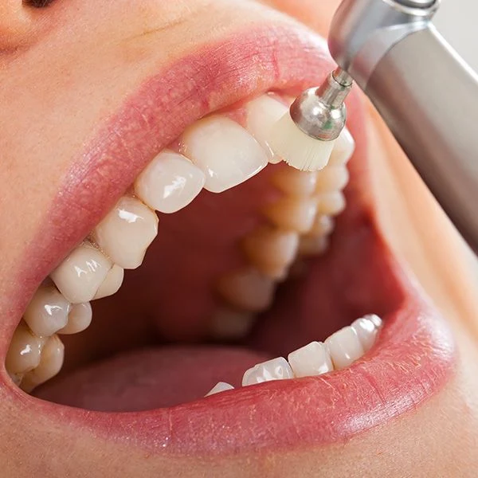
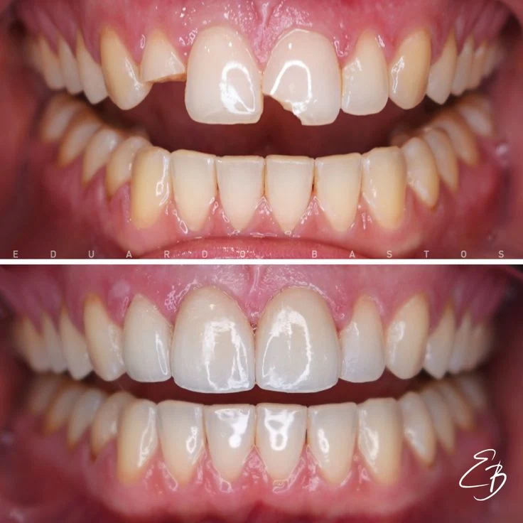
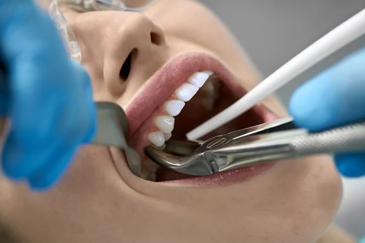
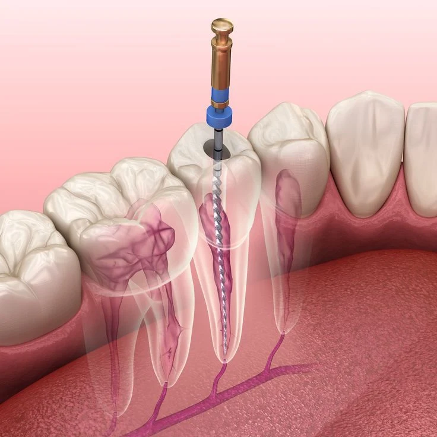
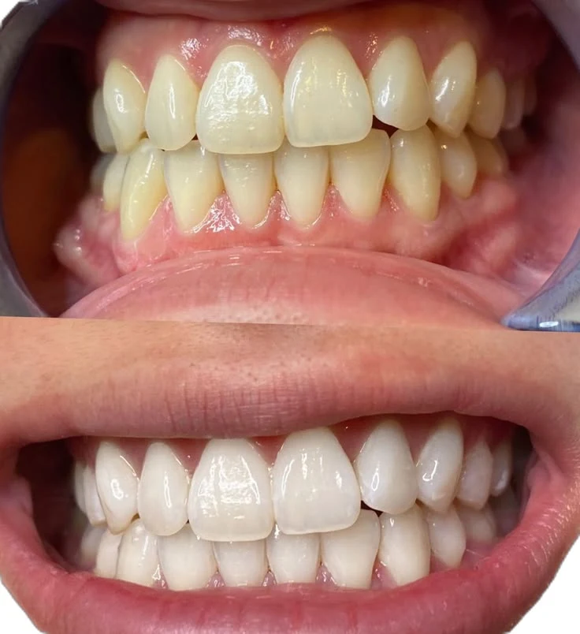
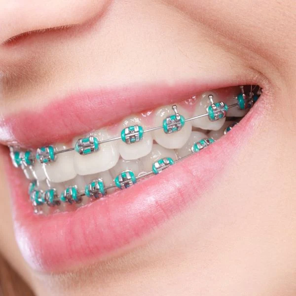

Limpeza Dental
Remoção de tártaro e placa bacteriana realizada pelo dentista usando aparelhos de ultrassom e jatos de bicarbonato. Serve para prevenir cáries e doenças na gengiva.
transformando sorrisos.

Remoção de tártaro e placa bacteriana realizada pelo dentista usando aparelhos de ultrassom e jatos de bicarbonato. Serve para prevenir cáries e doenças na gengiva.

Conhecida popularmente como "obturação". O dentista remove a parte do dente que foi danificada por uma cárie e preenche o espaço com resina para devolver o formato e a função do dente.

Remoção cirúrgica de um dente que não pode mais ser salvo (por fratura ou cárie severa) ou que prejudica a arcada.

Remoção da polpa (o "nervo") do dente quando ela está inflamada ou morta devido a cáries profundas. O espaço interno é limpo, desinfetado e vedado.

Uso de géis clareadores químicos (em consultório ou com moldeira em casa) para remover manchas e clarear o tom natural dos dentes.

Estrutura de metal, cerâmica ou alinhadores invisíveis que aplica força nos dentes para corrigir o alinhamento e a mordida.
| Sabor | Preço |
|---|---|
| Limpeza Dental | R$ 150 a R$ 300 |
| Restauração | R$ 120 a R$ 300 |
| Extração de Dente | R$ 200 a R$ 600 |
| Tratamento de Canal | R$ 400 a R$ 1.200 |
| Clareamento Dental | R$ 700 a R$ 1.500 |
| Aparelho Ortodôntico | R$ 1.500 a R$ 4.000 |